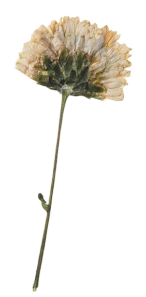

What Do Hamsters Eat?
Hamster are omnivores meaning this means wild hamsters eat a mix of plants and insects. The best diet for you hamster is one that is similar to what they would eat in the wild, including fresh veg and protein-packed treats like mealworms. Hamsters love to hoard their food. They pack extra food into special cheek pouches and then store it around their cage for later.The ideal hamster diet will include:
Fruit and Vegetables
Small amounts of fresh fruit, vegetables or herbs.
Fresh Water
Your hamster will also need constant access to clean, fresh water. It can be put in water bottle with a metal.

Foods you can feed your hamster:
These fruits, vegetables and herbs are all suitable for your hamster. Make sure you give them a good wash before you feed them to your hamster and only feed a small amount each day.
- Carrot
- Broccoli
- Cabbage
- Cauliflower
- Chicory
- Spinach
- Sweet peppers
- Cucumber
Vegetables

- Apple
- Pear
- Peach
- Melon
Fruits
- Basil
- Sage
- Parsley
- Coriander
Herbs
Foods you should avoid feeding to your hamster
- Onion
- Garlic
- Chives
- Chili peppers
- Raw potatoes
Vegetables
- Pickles
- Candy
- Chocolates
- Spices/seasoning
Other Foods